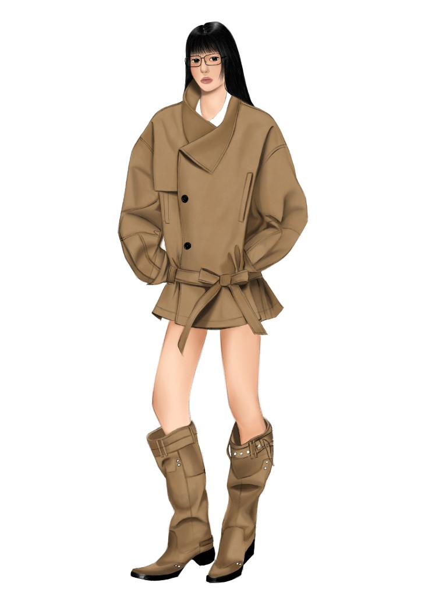

my designs

A visual study of a runway look that deeply inspires me. This design blends structured utilitarian elements with a relaxed, monochromatic silhouette. Analyzing the way this outfit plays with volume and proportion gives me endless ideas for the shapes and textures I want to experiment with in my own future collections.
The centerpiece is an oversized, short-cut trench coat featuring an asymmetric high-collar overlay, sharp double-button closures, and dramatically relaxed, gathered sleeves. An integrated fabric tie beautifully cinches the waist, grounding the voluminous jacket against a sophisticated, monochromatic palette of rich camel and warm tan-taupe tones. The entire look is anchored by chunky, slouchy knee-high boots embellished with rugged belt straps and subtle metallic hardware, perfectly balancing modern tailoring with a bold, street-style attitude.